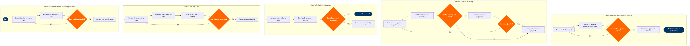

Route Profitability Analysis
BPMN Process Flow

Click to enlarge · Scroll to zoom · Drag to pan
L4 Step Detail
| Step | L4 Step Name | Role | System | Input | Output | KPI | Pain Point / Risk | Decision | Exception |
|---|---|---|---|---|---|---|---|---|---|
| 1.1 | Extract Booking & Revenue Data by Route | Network Analyst | Amadeus SkyCAST | PNR booking records, O&D itinerary data, prior 12-month revenue history | Route-level revenue dataset by market, cabin, fare family | Data extraction completeness ≥99% of active routes | SkyCAST O&D attribution lags 3–5 days; interline revenue excluded from base data, understating true market contribution | ||
| 1.2 | Pull Ancillary & Fare-Mix Revenue Data | Revenue Analyst | Amadeus Altéa PSS | Ancillary sales records (bags, seats, upgrades), fare-mix breakdown by RBD | Augmented revenue file including total revenue per available seat (RASK) per route | Ancillary revenue captured per departure ≥$18 industry benchmark | Altéa ancillary attribution is at PNR level, not segment level; multi-leg itineraries require manual pro-ration logic | ✓ | |
| 1.3 | Validate O&D Data Completeness | Senior Network Planner | AWS Redshift | Extracted revenue file, Altéa ancillary data | Data quality scorecard; approved dataset or rejection notice | Data gap rate <1% across all active routes before proceeding | AWS Redshift pipeline failures during peak booking windows can delay weekly profitability cycles by 24–48 hours | ✓ | ✓ |
| 2.1 | Allocate Direct Operating Costs to Route | Finance Analyst | SAP S/4HANA Finance (FI/CO) | Fuel burn records, aircraft block hours, crew pay actuals by tail number | Direct cost per available seat mile (CASM-direct) per route | CASM-direct variance vs budget ≤2% per route | Fuel cost allocation by route requires tail-level tracking; charter and ferry legs inflate CASM if not excluded from scheduled service analysis | ||
| 2.2 | Apportion Fleet Ownership & Lease Costs | Fleet Planning Analyst | Amadeus SkyMAX | Fleet assignment records, aircraft lease rates, depreciation schedules from SAP | Ownership cost per block hour allocated to each route | Fleet cost per block hour within ±3% of fleet plan target | SkyMAX fleet assignments change frequently intra-day; historical assignment snapshots must be reconciled against actuals to avoid double-counting | ||
| 2.3 | Assign Airport Fees & Ground Handling Costs | Network Analyst | SITA Airport Management System (AMS) | Landing fee invoices, ground handling contracts, station cost actuals | Station cost per departure allocated to each route | Station cost recovery rate ≥95% of contracted amounts | SITA AMS data is station-level, not route-level; multi-carrier station operations require manual apportionment by frequency share | ✓ | |
| 2.4 | Reconcile & Freeze Route Cost Baseline | Senior Network Planner | AWS Redshift | Direct costs, ownership costs, station costs | Total CASM baseline locked for analysis; reconciliation sign-off record | Cost baseline reconciled within 48 hours of data extraction | Cross-system reconciliation between SAP, SkyMAX, and SITA AMS requires manual pivot matching; no automated three-way reconciliation tool in place | ✓ | ✓ |
| 3.1 | Calculate Route CASM vs RASM Spread | Senior Network Planner | Amadeus SkySYM | Frozen cost baseline, revenue dataset | Route P&L margin (RASM minus CASM) ranked by profitability decile | Network-average RASM–CASM spread ≥1.2¢ per ASM | SkySYM network simulation does not natively integrate SAP cost actuals; finance data must be imported via flat-file, introducing version control risk | ||
| 3.2 | Benchmark Route Against Network Average | Network Analyst | OAG Schedule Analyser | Route P&L rankings, competitor schedule and frequency data | Competitive context report: market share, frequency parity, fare premium vs peers | Routes with <80% of network-average margin flagged for review | OAG data refresh is weekly; fast-moving competitive markets (e.g., ultra-LCC entry) may not be reflected until after analysis is complete | ||
| 3.3 | Segment Profitability by Season & Day-of-Week | Revenue Analyst | Amadeus Revenue Management (NRM) | Route P&L file, booking curve data segmented by departure date | Seasonal P&L heat map per route; peak vs off-peak contribution split | Seasonal margin variance identified to ±0.5¢ RASM resolution | NRM seasonal demand curves are calibrated at the O&D level; thin markets with <200 weekly passengers produce statistically unreliable segmentation outputs | ||
| 3.4 | Flag Routes Below Profitability Threshold | Senior Network Planner | Amadeus SkySYM | Seasonal P&L heat map, network benchmark data | Watch list of underperforming routes requiring scenario modelling | Routes with RASM–CASM <0.5¢ or negative margin flagged within 5 business days of data freeze | Threshold calibration is manual; no automated trigger in SkySYM — threshold drift goes undetected between quarterly reviews | ✓ | |
| 4.1 | Model Frequency & Gauge Change Impact | Network Planner | Amadeus SkySYM | Watch-list routes, available aircraft and slot capacity | Sensitivity analysis: RASM/CASM delta under ±1 frequency and gauge up/down scenarios | Scenario delta accuracy vs actuals within ±5% on prior test routes | SkySYM gauge scenarios assume average load factor; does not model spill or recapture from competitor capacity dynamically | ||
| 4.2 | Test Fare Adjustment Recovery Scenarios | Revenue Analyst | PROS RM | Route price elasticity curves, current fare ladder, competitor fares from OAG | Fare scenario P&L projections; breakeven load factor under revised fare structure | Projected breakeven LF improvement ≥5pp vs base case to qualify as a viable path | PROS RM elasticity models require ≥18 months of clean booking data; newly launched routes or post-disruption markets produce unreliable elasticity estimates | ✓ | ✓ |
| 4.3 | Evaluate Seasonal Suspension Viability | Senior Network Planner | Amadeus SkyMAX | Routes with no viable fare/frequency recovery, slot constraints, aircraft redeployment options | Suspension impact model: freed capacity redeployment value vs passenger disruption cost | Redeployment must yield ≥2¢ RASM improvement on receiving route to justify suspension | SkyMAX redeployment optimisation does not account for passenger goodwill cost or brand risk on thin community routes serving markets with limited alternatives | ✓ | ✓ |
| 5.1 | Prepare Route P&L Recommendation Report | Senior Network Planner | Tableau | Scenario modelling outputs, suspension analysis, competitive benchmarks | Executive route P&L report with ranked recommendations (retain/optimise/suspend) and financial impact summary | Report delivered within 5 business days of scenario completion | Tableau dashboards pull from AWS Redshift snapshots; live schedule changes in SkyWORKS during report preparation can make visuals stale before the committee meeting | ||
| 5.2 | Present Recommendations to Network Investment Committee | Director of Network Planning | Amadeus SkySYM | Route P&L report, scenario models, stakeholder pre-read distributed 48 hours prior | Committee decision: approve, revise, or defer each recommendation | ≥80% of recommendations decided in single committee session without remand | Committee decisions require CFO alignment on CASM assumptions; Finance and Network Planning use different cost allocation methodologies, causing recurring meeting delays | ✓ | |
| 5.3 | Implement Approved Schedule Changes | Schedule Planning Manager | Amadeus SkyWORKS | Approved committee decisions, SSIM update requirements, slot availability confirmation | Updated schedule in SkyWORKS; SSIM filed to GDS and Altéa PSS | Schedule changes published to GDS within 72 hours of committee approval | SkyWORKS to Altéa PSS schedule sync failures have occurred during peak filing periods, requiring manual reconciliation that delays booking availability | ✓ | |
| 5.4 | Monitor Post-Action Route Performance | Network Analyst | Amadeus Revenue Management (NRM) | Live booking data on modified routes, updated CASM actuals from SAP | 30/60/90-day performance tracking report vs projected recovery targets | RASM–CASM spread on modified routes trending toward target within 60 days | NRM monitoring dashboards do not automatically flag when post-action routes underperform vs projection; analyst must manually compare actuals to scenario model each cycle |